Evolución y discursos discriminatorios
La ciencia evolutiva bien hecha es la mejor herramienta contra su propio mal uso.
Juan David Leongómez ![]()
EvoCo, Universidad El Bosque
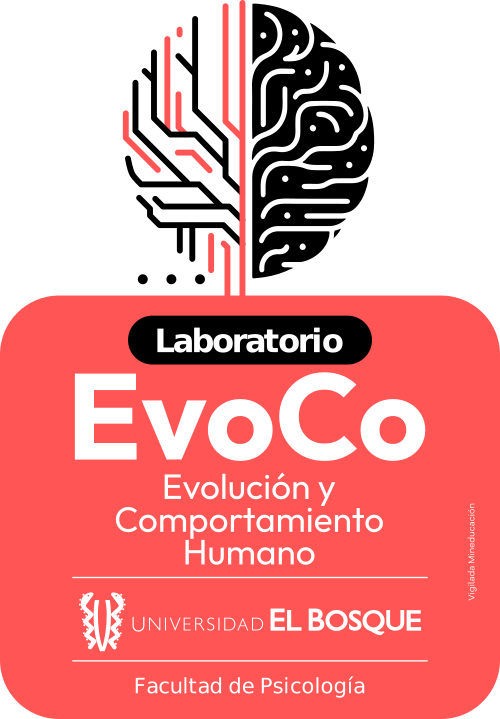
Simposio Pensamiento evolutivo en la psicología
Universidad El Bosque · 26 de agosto de 2026
Evolución y discursos discriminatorios
Evolución y discursos discriminatorios
Las perspectivas evolutivas son reduccionistas.
Evolución y discursos discriminatorios
Las perspectivas evolutivas son reduccionistas.
Determinismo biológico
Un mundo que retrocede
Racismo
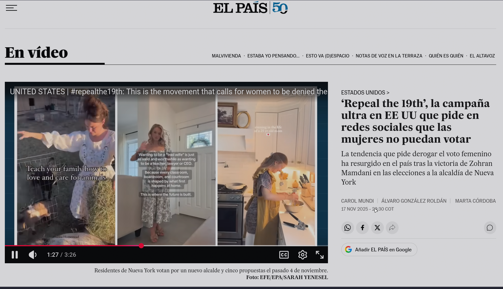
Retroceso de derechos
Fuentes: news.un.org (2025) · elpais.com (2025)
La psicología evolutiva en el centro
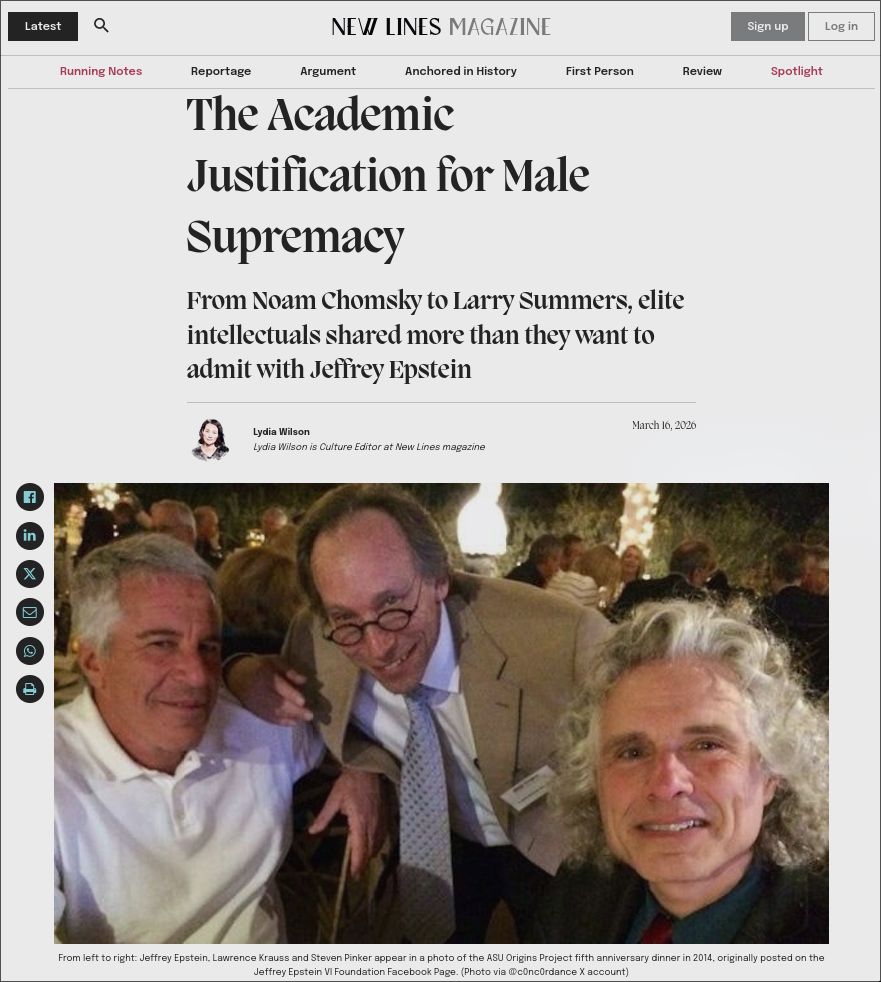
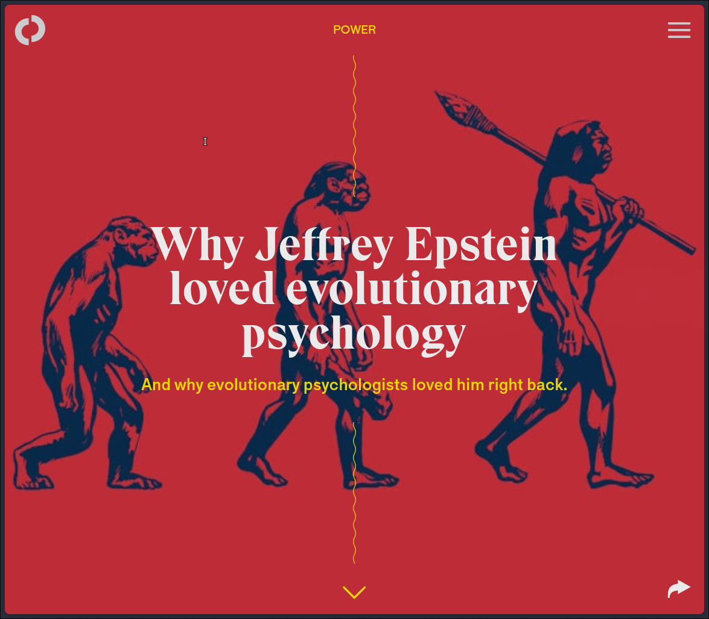
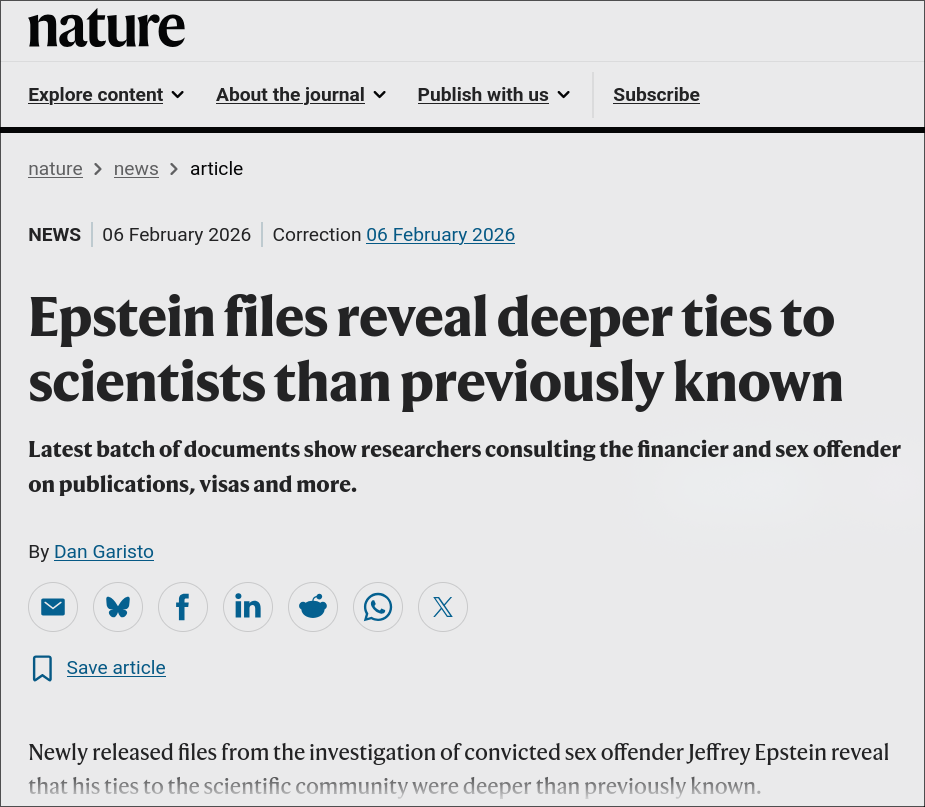
La psicología evolutiva en el centro
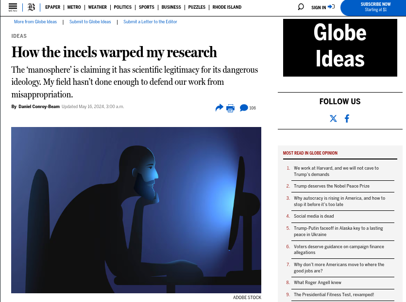
Cómo los incels distorsionaron mi investigación
La “manosfera” afirma tener legitimidad científica para su peligrosa ideología. Mi campo no ha hecho lo suficiente para defender nuestro trabajo de su uso indebido.
Conroy-Beam, Boston Globe, 2024
La psicología evolutiva en el centro
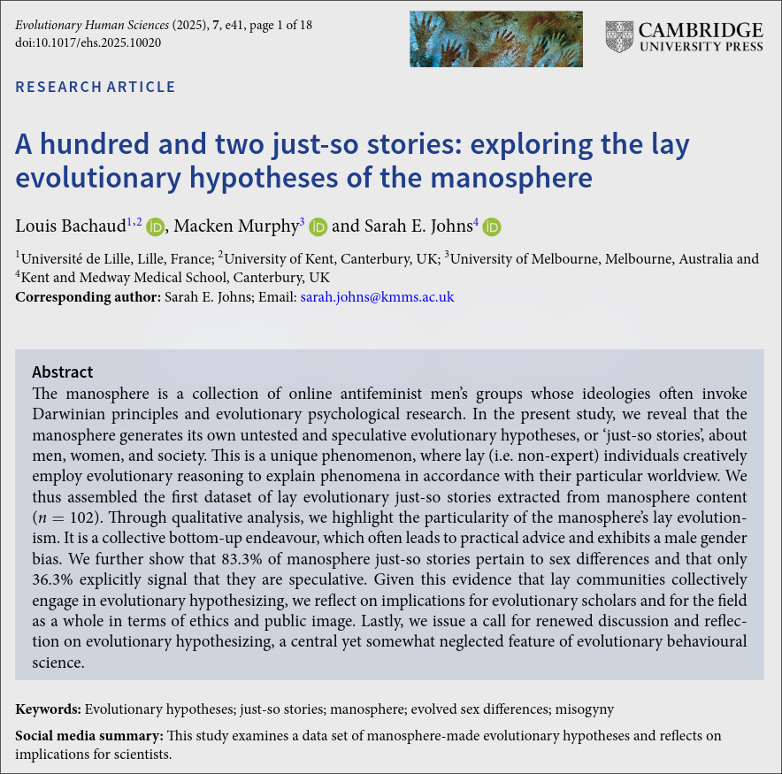
La manósfera no solo usa la psicología evolutiva: crea sus propias hipótesis evolutivas no contrastadas (“relatos ad hoc”) sobre hombres, mujeres y sociedad, en un fenómeno de razonamiento evolutivo hecho por personas no expertas.
Bachaud et al. (2025)
La grieta
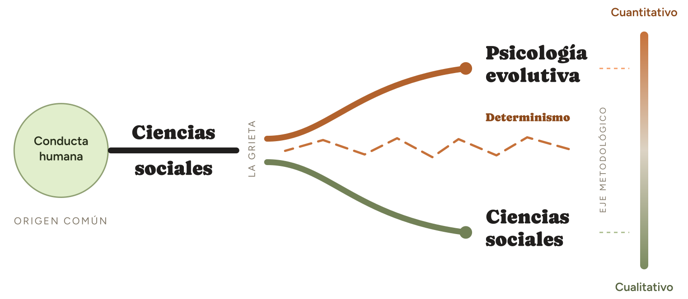
La grieta
Es una idea falaz
¿Por qué los hombres son, en promedio, más propensos a la violencia física?
90%
de los sospechosos de homicidio a nivel global son hombres
UNODC, Global Study on Homicide (2023)
Dos explicaciones, dos niveles
Explicación social
Nivel próximo
Socialización Normas de masculinidad Refuerzo cultural
Explicación evolutiva
Nivel último
Competencia por estatus Historia evolutiva Riesgo reproductivo
Ambas pueden ser ciertas al mismo tiempo: responden preguntas distintas
Naturaleza vs. crianza: falso dilema
Ningún rasgo conductual es 100% genes ni 100% ambiente: la heredabilidad promedio es del 49%
Error 1: Exclusión
Correcto
Error
Tratar las dos explicaciones como rivales en vez de complementarias. Esto ha alejado a la psicología evolutiva de otras ciencias sociales.
Error 2: Falacia naturalista
Versión 1
Explicar ≠ Defender
Estudiar un fenómeno y explicarlo no es justificarlo
Versión 2
Natural ≠ Deber ser
Que algo tenga una explicación no lo hace inevitable ni deseable
Evolución ≠ Destino
Racismo
“Intelligence” research & Race “science”
Pseudociencia y culto al IQ
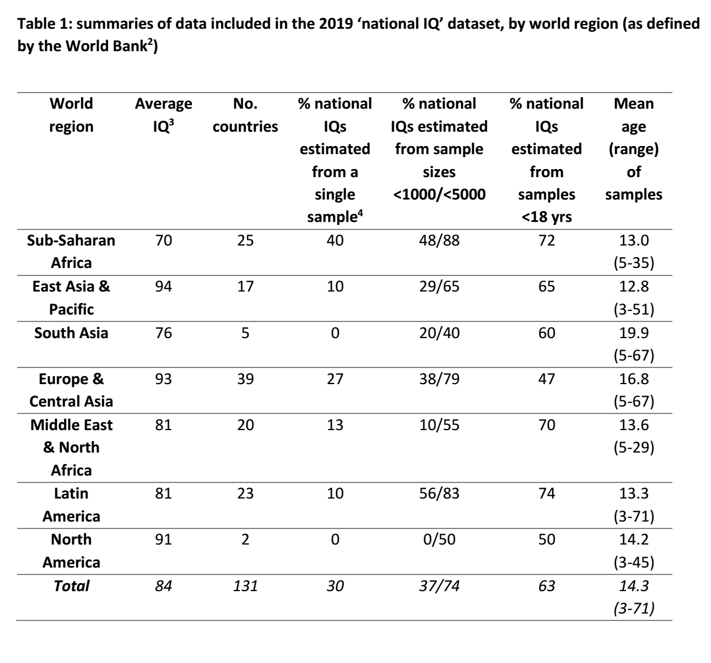
Lynn & Vanhanen (2002) · Lynn & Becker (2019)
Racismo
Rebeca Sear
Presidenta, EHBEA
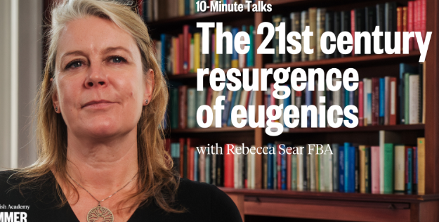
El resurgimiento de la eugenesia: Sear (2021)
Racismo
Algún racista de Twitter
Racismo
Diversidad humana
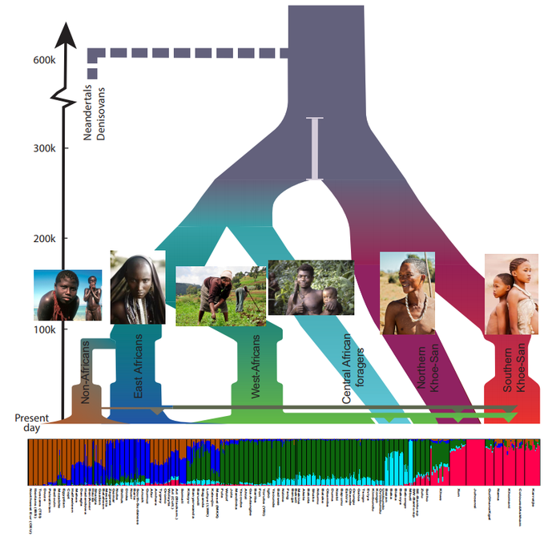
Sexismo y culto a la masculinidad
Énfasis en testosterona y masculinidad
Simplificación en la interpretación
Archer (2006)
Sexismo y culto a la masculinidad
Cómo los incels distorsionaron mi investigación
La “manosfera” afirma tener legitimidad científica para su peligrosa ideología.
Conroy-Beam, Boston Globe (2024)
La “familia tradicional”
Rebeca Sear
Presidenta, EHBEA
La “familia tradicional”
El mito del hombre proveedor
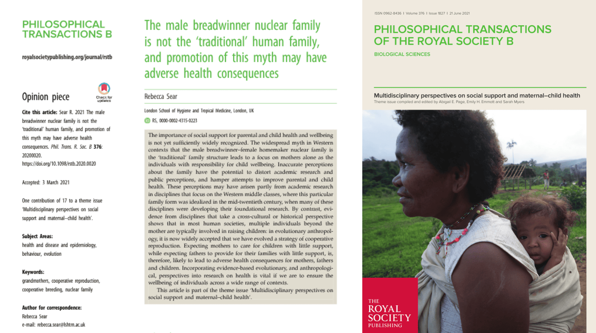
El modelo de hombre proveedor no es la familia humana “tradicional”: Sear (2021)
Sexo vs. género
Constructos multidimensionales, no reducibles a lo binario
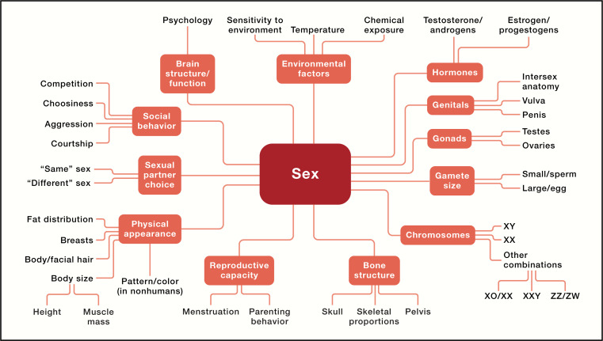
Sexo y género: constructos multidimensionales que integran factores biológicos y sociales: Cell (2024)
Aportes con evidencia sólida
La integración es la que desmonta el determinismo
El punto no es rechazar, ni tragar entero
¡Gracias!
Juan David Leongómez PhD, MSc EvoCo · Universidad El Bosque jleongomez@unbosque.edu.co
Referencias
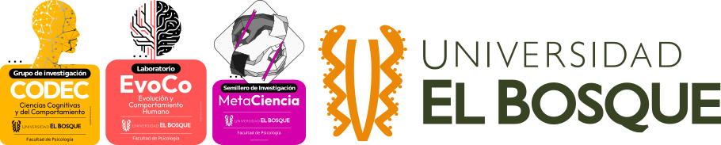
Juan David Leongómez PhD, MSc